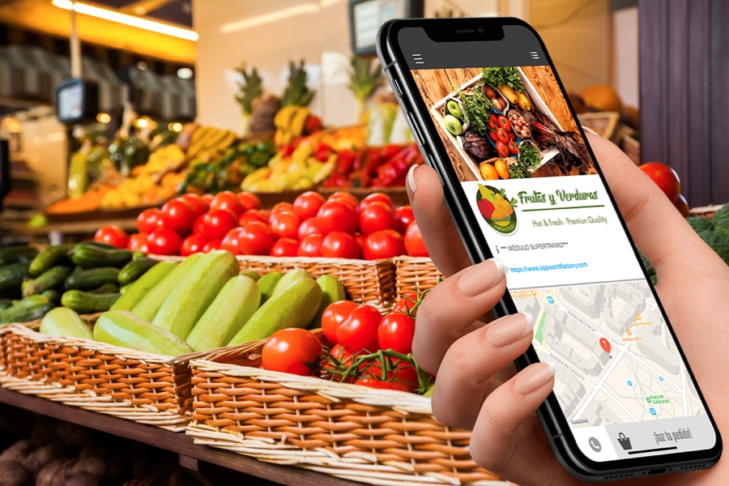
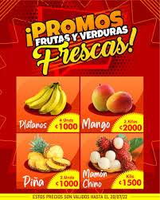
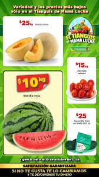

Frutas Frescas

Precios diarios, Diciembre 2024
En nuestra frutería, encontrarás una amplia selección de frutas frescas a los mejores precios del mercado.
- Manzanas
- Plátanos
- Fresas
- Ciruela
- Durazno
- Granada roja
- Limón
- Mango
- Melon
- Piña
- Sandia
- Uva
Verduras Frescas

Precios diarios, Diciembre 2024
Ofrecemos una gran variedad de verduras frescas, ideales para tus comidas saludables.
- Lechuga
- Tomates
- Zanahorias
- Acelga
- Ajo
- Apio
- Brócoli
- Cebolla
- Coliflor
- Espinaca
- Pepino
Sobre Nosotros
En "El Plátano Riendo" nos dedicamos a ofrecer productos frescos y de calidad para que tu alimentación sea lo más saludable posible.
Ofertas Destacadas
 - Manzana: 10% de descuento por compra mayor a 5 kg.
- Plátano: 2x1 en la compra de 3 kg.
- Tomate: 15% de descuento en compras mayores a $20.
Recetas Saludables
Descubre nuestras recetas fáciles y nutritivas para aprovechar al máximo las frutas y verduras frescas.
CALDO DE RES (SENCILLO)ENSALADA DE FRUTAS